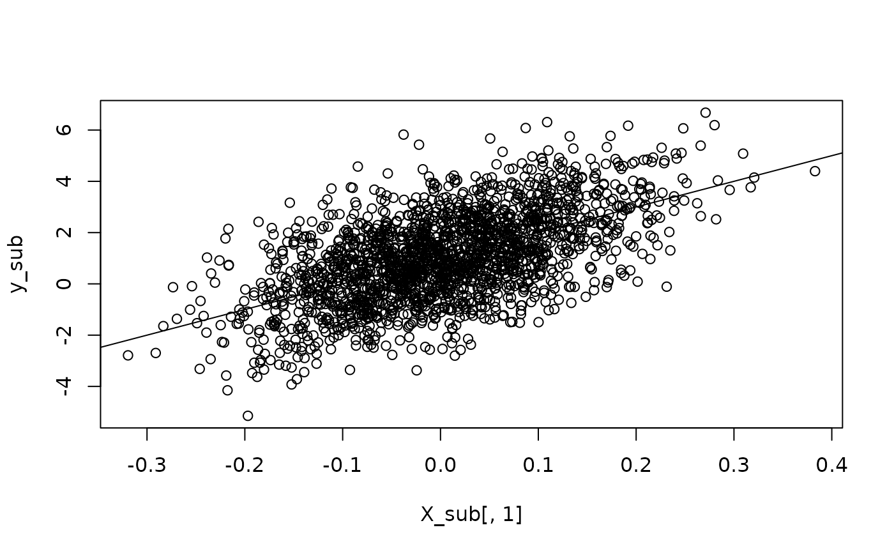
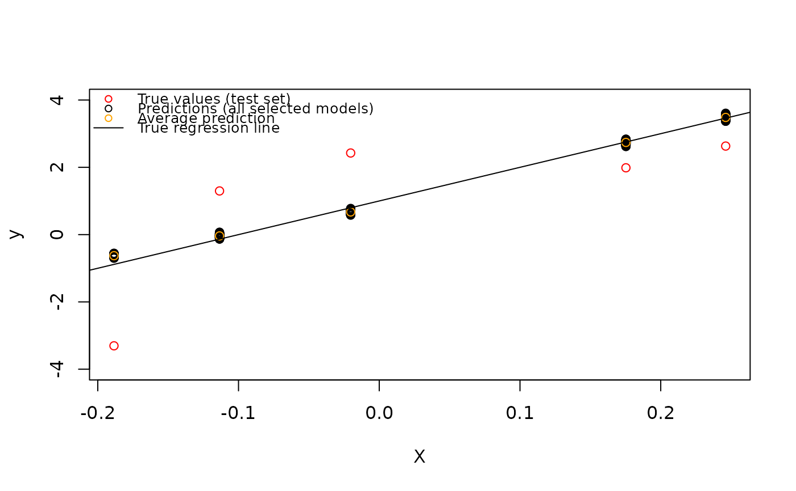

predict.swaglm.RdPredict method for a swaglm object
# S3 method for class 'swaglm'
predict(object, newdata, ...)An object of class swaglm returned by swaglm.
A data.frame or matrix containing the same predictors (columns) as used in the original training dataset.
Further arguments passed to or from other methods.
A list with two elements:
A numeric matrix containing the linear predictors
(\(\eta = X \hat{\beta}\)) for each observation in newdata for all selected models. Each row corresponds to an observation in
newdata, and each column corresponds to one of the selected models.
A numeric matrix containing the predicted responses,
obtained by applying the inverse link function to the elements in mat_eta_prediction.
The dimensions are identical to mat_eta_prediction, so that for each
observation (row) the predicted responses for all selected models are aligned per column.
Computes predictions from a fitted swaglm object on new data.
The function returns the linear predictors (eta) for each selected model
and the corresponding predicted responses using the model's inverse link function.
The function performs the following steps:
Checks that newdata has the same number of columns as the design matrix used in the fitted swaglm object.
Computes the linear predictors (\(\eta = X \hat{\beta}\)) for each selected model in the swaglm object.
Applies the inverse of the model's link function to compute predicted responses.
set.seed(12345)
n <- 2000
p <- 100
# create design matrix and vector of coefficients
Sigma <- diag(rep(1/p, p))
X <- MASS::mvrnorm(n = n, mu = rep(0, p), Sigma = Sigma)
beta = c(10, rep(0,p-1))
sigma2=2
y <- 1 + X%*%beta + rnorm(n, mean = 0, sd = sqrt(sigma2))
# subset data
n_data_train = n-5
X_sub = X[1:n_data_train, ]
y_sub = y[1:n_data_train]
# plot train data
plot(X_sub[,1], y_sub)
abline(a=1, b=beta[1])

# run swag
swaglm_obj = swaglm(X = X_sub, y = y_sub, p_max = 15, family = gaussian(),
method = 0, alpha = .15, verbose = TRUE)
#> Completed models of dimension 1
#> Completed models of dimension 2
#> Completed models of dimension 3
#> Completed models of dimension 4
#> Completed models of dimension 5
#> Completed models of dimension 6
#> Completed models of dimension 7
#> Completed models of dimension 8
#> Completed models of dimension 9
#> Completed models of dimension 10
#> Completed models of dimension 11
#> Completed models of dimension 12
#> Completed models of dimension 13
#> Completed models of dimension 14
#> Completed models of dimension 15
# compute prediction
X_to_predict = X[(n_data_train+1):(dim(X)[1]), ]
y_pred = predict(swaglm_obj, newdata = X_to_predict)
n_selected_model = dim(y_pred$mat_eta_prediction)[2]
# in that case mat_eta_prediction and mat_reponse_prediction are the same
all.equal(y_pred$mat_eta_prediction, y_pred$mat_reponse_prediction)
#> [1] TRUE
# compute average prediction (accross selected models)
y_pred_mean = apply(y_pred$mat_reponse_prediction, MARGIN = 1, FUN = mean)
# plot
y_to_predict = y[(n_data_train+1):(dim(X)[1])]
plot(X_to_predict[,1], y_to_predict, col="red", ylim=c(-4,4), ylab="y", xlab="X")
# add all prediction
for(i in seq(dim(X_to_predict)[1])){
# i=1
points(x = rep(X_to_predict[i,1],n_selected_model ),
y = y_pred$mat_reponse_prediction[i,])
}
points(x =X_to_predict[,1], y = y_pred_mean, col="orange")
abline(a=1, b=beta[1])
legend(
"topleft",
legend = c(
"True values (test set)",
"Predictions (all selected models)",
"Average prediction",
"True regression line"
),
col = c("red", "black", "orange", "black"),
pch = c(1, 1, 1, NA),
lty = c(NA, NA, NA, 1),
cex = 0.8,
bty="n"
)

# ----------------------------------- logistic regression
set.seed(12345)
n <- 2000
p <- 100
# create design matrix and vector of coefficients
Sigma <- diag(rep(1/p, p))
X <- MASS::mvrnorm(n = n, mu = rep(0, p), Sigma = Sigma)
beta = c(-15,-10,5,10,15, rep(0,p-5))
# --------------------- generate from logistic regression with an intercept of one
z <- 1 + X%*%beta
pr <- 1/(1 + exp(-z))
y <- as.factor(rbinom(n, 1, pr))
y = as.numeric(y)-1
# subset data
n_data_train = n-200
X_sub = X[1:n_data_train, ]
y_sub = y[1:n_data_train]
swaglm_obj = swaglm::swaglm(X=X_sub, y = y_sub, p_max = 20, family = stats::binomial(),
alpha = .15, verbose = TRUE, seed = 123)
#> Completed models of dimension 1
#> Completed models of dimension 2
#> Completed models of dimension 3
#> Completed models of dimension 4
#> Completed models of dimension 5
#> Completed models of dimension 6
#> Completed models of dimension 7
#> Completed models of dimension 8
#> Completed models of dimension 9
#> Completed models of dimension 10
#> Completed models of dimension 11
#> Completed models of dimension 12
#> Completed models of dimension 13
#> Completed models of dimension 14
#> Completed models of dimension 15
# compute prediction
X_to_predict = X[(n_data_train+1):(dim(X)[1]), ]
y_pred = predict(swaglm_obj, newdata = X_to_predict)
y_pred_majority_class <- ifelse(rowMeans(y_pred$mat_reponse_prediction) >= 0.5, 1, 0)
y_to_predict = y[(n_data_train+1):(dim(X)[1])]
# tabulate
table(True = y_to_predict, Predicted = y_pred_majority_class)
#> Predicted
#> True 0 1
#> 0 52 25
#> 1 11 112